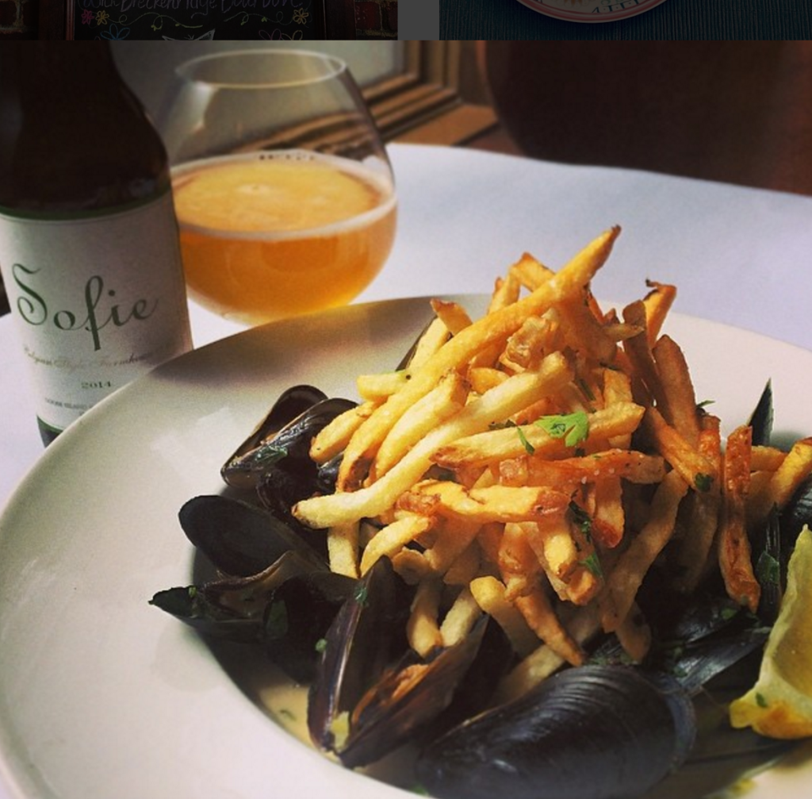
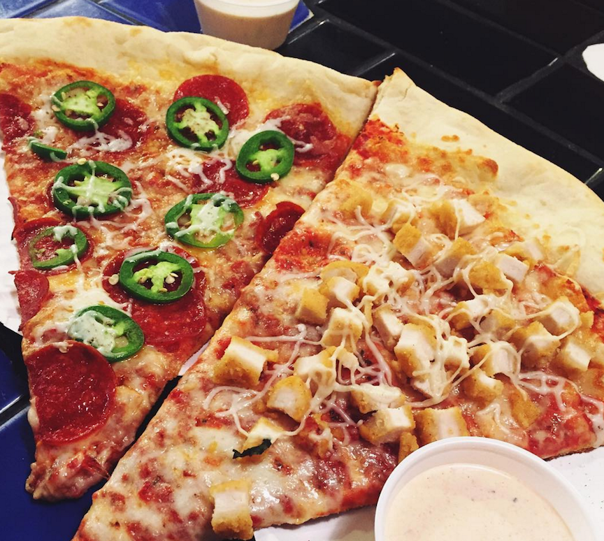
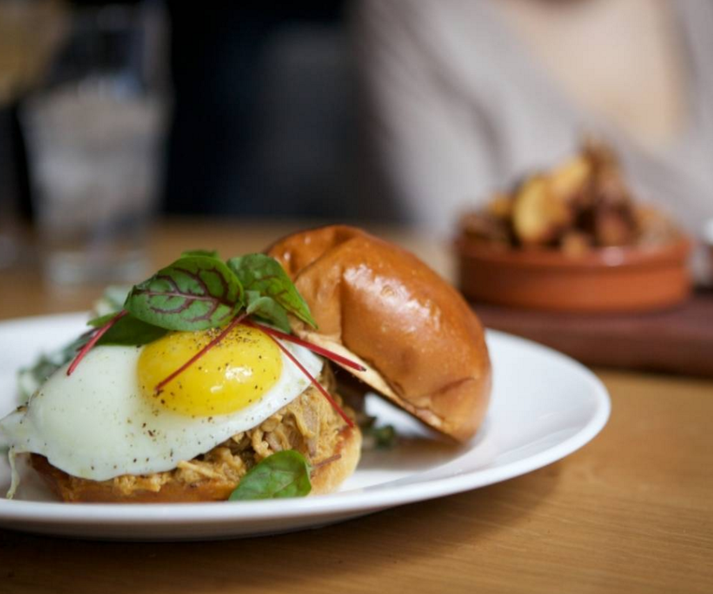

There are hundreds of places to eat in Colorado, no, even Boulder alone! Here are just a few of my recommendations that you should stop at!

Image of Brasserie Ten Ten's famous mussels, courtesy of Brasserie Ten Ten
Brasserie Ten Ten is a traditional French bistro, and are known for their Moules a la mariniere! They are mussels dressed in butter, seasoned with thyme, and served with a side of fries. Very delicious!

Tasty picture of Cosmo's Pizza from Boulder_Bites on instagram
Featuring a thin, gooey crust, Cosmo's is the place to go in Boulder for some local pizza! They even are open super late!

The Kitchen's delicious classic fried egg and ham breakfast sandwhich is a great way to start your day, courtesy of the Kitchen on instagram
No list is complete without breakfast, and the Kitchen is a great place to go! Their famous fried egg and ham sandwich on a toasted bun is my go-to whenever I go to Boulder!
Homepage Travel Stories How to get Started About Me Places to See Things to Do